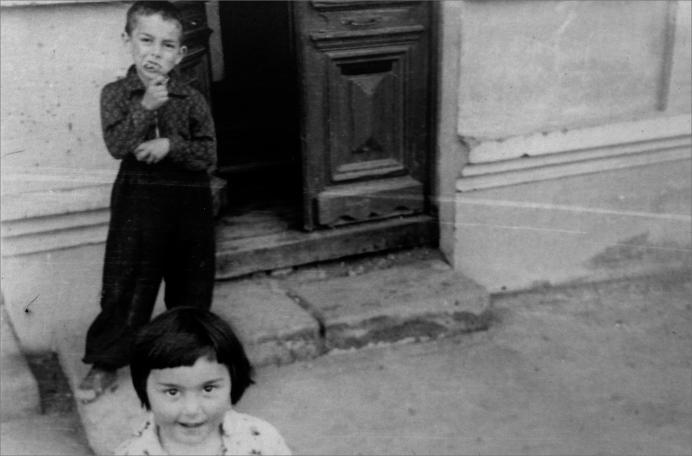

About four years ago, when I returned home from compulsory military service, I found a box of old negatives. They had been left to the dust in the room my family refers to as the “useless space of horrors.”
The box had long since given up the fight against mold and even some of the negatives inside were losing the battle. But what was really surprising was that the images—some 600 frames—were not relics of my early career. Instead they appeared to be people and places that, based on the clothing and cars, dated back to the 1950s. While some of the faces were familiar, I did not recognize the scenes.
It was clear that these negatives were the history of not just one person but a whole society from the 1950s to the 1980s; the camera had been an objective observer as well as a preserver of identities, social structures, and stories that could not be shared due to social pressure and stereotypes.
My lack of knowledge about these scenes was not completely unexpected: my parents had always been loath to discuss the past in any detail. And that pattern played out as I pestered them for information about the people and places in this trove of lost negatives.
To be honest, I never understood my parents’ silence about their life, or why they refused to discuss who they had been before I was born, what it had been like to live in the Soviet Union, or where our family came from.
As I struggled to get answers from my family, I came to realize how hard it can be to share the family history, even with those closest to you.
The story of those negatives—the story of my grandma, it turns out—is likely the most important chapter in my family’s history,

Ludmila and Zakhar on a trip to Moscow in the 1950s. The two met in Baku when Ludmila was a teenager and moved to Tbilisi after their marriage.

Ludmila and Dima, Giorgi’s father, in Moscow. His parents did not take the other children with them on the trip.

Ludmila, her mother-in-law Liza and her first child, Goderdzi, in a studio portrait, taken while her husband Zakhar was fighting on the frontlines against the Germans.
It was clear that these negatives were the history of not just one person but a whole society from the 1950s to the 1980s; the camera had been an objective observer as well as a preserver of identities, social structures, and stories that could not be shared due to social pressure and stereotypes.
My lack of knowledge about these scenes was not completely unexpected: my parents had always been loath to discuss the past in any detail. And that pattern played out as I pestered them for information about the people and places in this trove of lost negatives.
To be honest, I never understood my parents’ silence about their life, or why they refused to discuss who they had been before I was born, what it had been like to live in the Soviet Union, or where our family came from.
As I struggled to get answers from my family, I came to realize how hard it can be to share the family history, even with those closest to you.
The story of those negatives—the story of my grandma, it turns out—is likely the most important chapter in my family’s history,
a chain of events that influenced at least three generations. But the cocoon of silence they wrapped themselves in was common in the Soviet Union, where the iron curtain was not just about borders and banning Coca-Cola. It was about fear, including a very real fear of sharing personal stories, a fear of a past that, if dug up, could result in a life of discrimination, violence, and even possibly death.
I always identified myself as an ethnic Georgian even though, until recently, I believed that my paternal grandmother was Russian. That, however, was only partially true.


After her husband returned from the front, Ludmila continued to use her Leica to document
their lives—and her own transformation from Jewish war refuge to Russian émigré from Baku.
Ludmila with her neighbors at the park in front of the building where the family lived.
Summer in Tbilisi. This image was one of about 600 negatives Ludmila had packed away and the
family had largely forgotten for years.
Ludmila, her daughter Liza and another small girl in a small park in front of the apartment building
where they lived. The year is unknown--many details about the photos have been forgotten.
The story of these images, the story of my grandmother Ludmila, is likely the most
important chapter in my family’s history, a chain of events that influenced at least three
generations.
Dima and his sister Liza in front of the apartment building where they lived in Tbilisi.
The true story, which I learned piecemeal from my father over the span of several years, starts in Berlin in 1935. My great-grandmother, Stella Tsukerman, was in trouble. The Nazis were closing in on the Jewish community and she needed a safe harbor for herself and her 11-year-old daughter, Ludmila. Her husband had been Russian and so, in an act of desperation, she took his last name—a token piece of bureaucratic cover—in the hopes it could serve as a reprieve from the increasingly aggressive and dangerous restrictions and laws being passed against Jews in Germany.
Soon, however, it was clear that a Russian last name would not be enough. Stella and Ludmila fled, taking only a camera with them to record their new life. The perilous journey took them from Berlin to Warsaw, and then to Kyiv and finally, across the Caucasus Mountains to Baku.
Ludmila was already 15 by the time the two settled in Baku. She used the camera to document her new life, which included a chance meeting with a 26-year-old Georgian KGB agent, Zakhar, who was in Baku to study music as part of a training course.
The two fell in love and Ludmila moved to Tbilisi with her husband, leaving Stella behind in Baku. Their first son, Goderdzi, had already been born when Zakhar had to leave his young bride to fight on the front lines. He eventually retraced her steps, following the fighting through Ukraine all the way to Germany.

Ludmila, Zakhar, three of their children and an unknown child. Ludmila was 11 when she and her mother Stella fled from Nazi Germany. They eventually settled in Baku, where Ludmila met Zakhar at a music school.

These images were the history of not just one person but a whole society from the 1950s to the
1980s.
Ludmila and her children. Born to a Jewish German-Russian family in Berlin, Ludmila spent most
of her life shedding her past and creating a new identity as a Russian from Baku.

Ludmila and Zakhar pose with two of their children and others—perhaps relations. By the time the images were found, the only living member of the family from that generation, Dima, had suffered a stroke and could not recall many details.
After the war, their little family grew and Ludmila continued to use her Leica to document their lives—and her own transformation from Jewish war refuge to Russian émigré from Baku.
The fear of revealing her Jewish roots followed her throughout her entire life,however, until her death in 2016. Even after the breakup of the Soviet Union, her fear of exposure persisted, in part due to a new wave of discrimination against ethnic minorities following the breakup of the Soviet Union when nationalistic fervor captured newly independent nations like Georgia.
The story of my family can be seen as a reminder of the cruelty of humanity that should never be repeated, and yet seems destined to remain unspoken history, forgotten as generations pass away. But is this the way to deal with the issue?
Perhaps it is best to learn a lesson from my family: my father told me the history of his mother after years of pestering, and by the time the whole story had been explained, he had suffered a stroke. There were many more details I want to know about Ludmila and Stella, but his memory today is faulty and it is hard to tell what is real and what is imagined.
In some small part, however, I think finally telling the tale was a relief for my dad. When he finished speaking about Ludmila and her life, he was crying. “Gio,” he said between tears, “bring me my suit. We need to go to Israel. I have brought my mother back to life and she will soon arrive in Tbilisi on the train and we will go home.”
Zakhar’s Soviet passport, one solid souvenir from the family’s past.